หน้า 1 — ต้นฉบับเป็นภาพ/ไม่มีข้อความที่สกัดได้
ดูภาพต้นฉบับหน้า 1
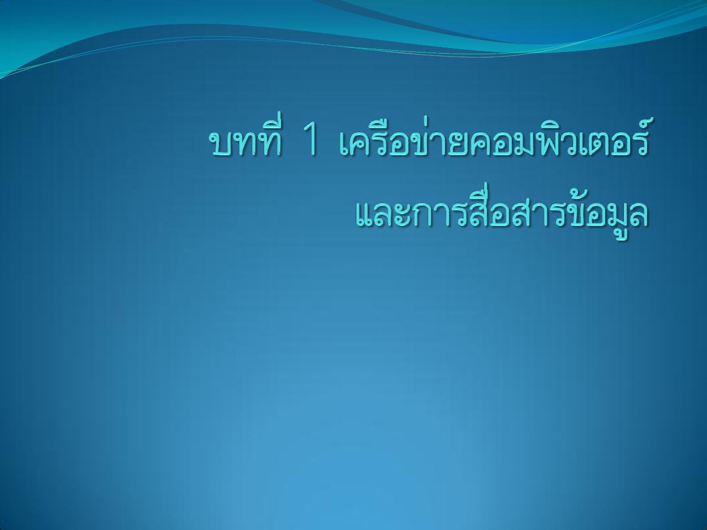
คลิกภาพเพื่อเปิดขยาย
อ่านข้อความต้นฉบับที่สกัดได้ (ไทย/อังกฤษตามไฟล์)
หน้านี้ไม่มีข้อความที่สกัดได้ กรุณาดูภาพต้นฉบับ
ทบทวนภาษาไทย: บทนำการสื่อสารข้อมูลและเครือข่าย
กลับสารบัญ ↑หน้า 2 — ความหมายของการสื่อสารข้อมูล
ดูภาพต้นฉบับหน้า 2
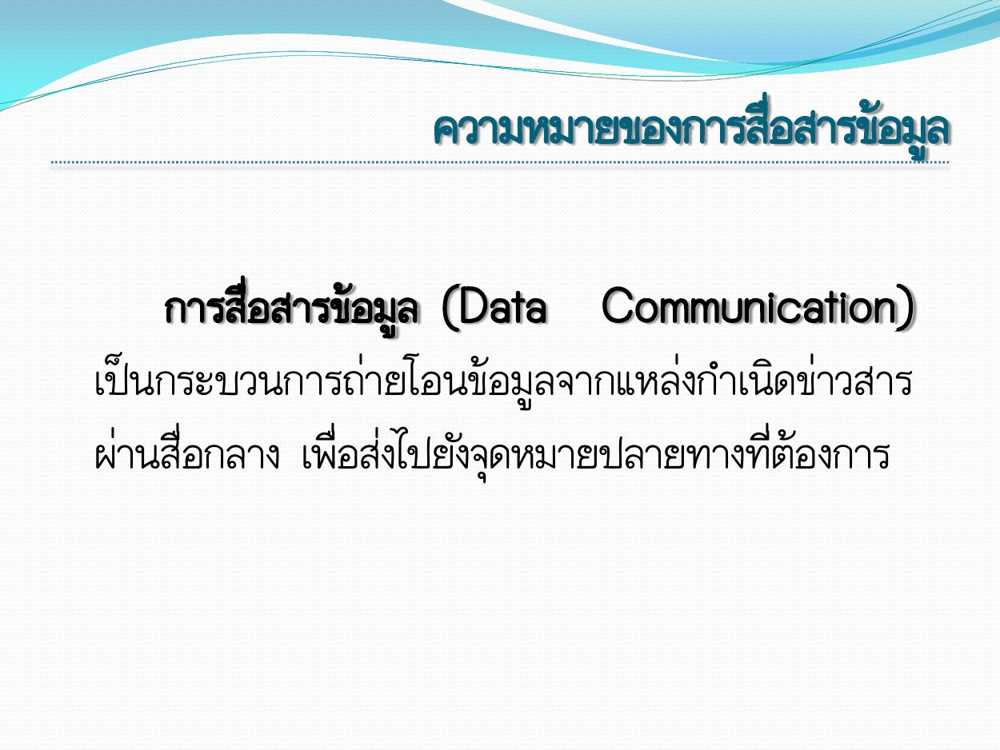
คลิกภาพเพื่อเปิดขยาย
อ่านข้อความต้นฉบับที่สกัดได้ (ไทย/อังกฤษตามไฟล์)
ความหมายของการสื่อสารข้อมูล
การสื่อสารข้อมูล (Data Communication)
เป็นกระบวนการถ่ายโอนข้อมูลจากแหล่งกาเนิดข่าวสาร
ผ่านสื่อกลาง เพื่อส่งไปยังจุดหมายปลายทางที่ต้องการทบทวนภาษาไทย: บทนำการสื่อสารข้อมูลและเครือข่าย
กลับสารบัญ ↑หน้า 3 — ส่วนประกอบของระบบการสื่อสารข้อมูล
ดูภาพต้นฉบับหน้า 3
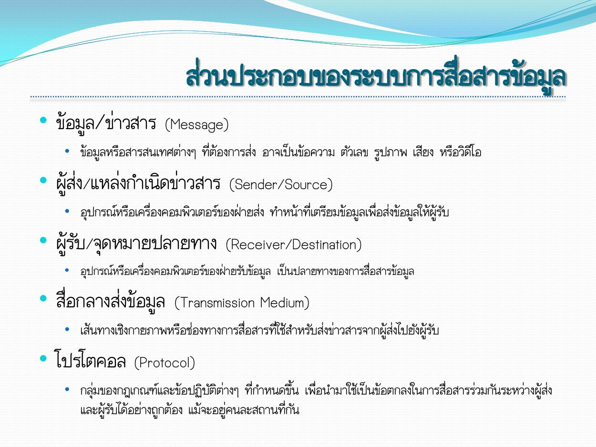
คลิกภาพเพื่อเปิดขยาย
อ่านข้อความต้นฉบับที่สกัดได้ (ไทย/อังกฤษตามไฟล์)
ส่วนประกอบของระบบการสื่อสารข้อมูล
• ข้อมูล/ข่าวสาร (Message)
• ข้อมูลหรือสารสนเทศต่างๆ ที่ต้องการส่ง อาจเป็นข้อความ ตัวเลข รูปภาพ เสียง หรือวิดีโอ
• ผู้ส่ง/แหล่งกาเนิดข่าวสาร (Sender/Source)
• อุปกรณ์หรือเครื่องคอมพิวเตอร์ของฝ่ายส่ง ทาหน้าที่เตรียมข้อมูลเพื่อส่งข้อมูลให้ผู้รับ
• ผู้รับ/จุดหมายปลายทาง (Receiver/Destination)
• อุปกรณ์หรือเครื่องคอมพิวเตอร์ของฝ่ายรับข้อมูล เป็นปลายทางของการสื่อสารข้อมูล
• สื่อกลางส่งข้อมูล (Transmission Medium)
• เส้นทางเชิงกายภาพหรือช่องทางการสื่อสารที่ใช้สาหรับส่งข่าวสารจากผู้ส่งไปยังผู้รับ
• โปรโตคอล (Protocol)
• กลุ่มของกฎเกณฑ์และข้อปฏิบัติต่างๆ ที่กาหนดขึ้น เพื่อนามาใช้เป็นข้อตกลงในการสื่อสารร่วมกันระหว่างผู้ส่ง
และผู้รับได้อย่างถูกต้อง แม้จะอยู่คนละสถานที่กันทบทวนภาษาไทย: บทนำการสื่อสารข้อมูลและเครือข่าย
กลับสารบัญ ↑หน้า 4 — คุณสมบัตพิ ื้นฐานของการสื่อสารข้อมูล
ดูภาพต้นฉบับหน้า 4
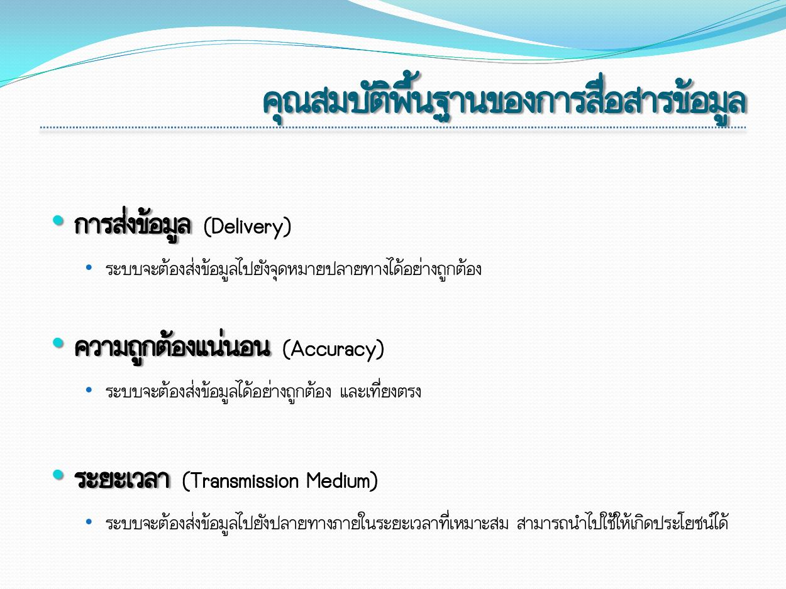
คลิกภาพเพื่อเปิดขยาย
อ่านข้อความต้นฉบับที่สกัดได้ (ไทย/อังกฤษตามไฟล์)
คุณสมบัตพิ ื้นฐานของการสื่อสารข้อมูล
• การส่งข้อมูล (Delivery)
• ระบบจะต้องส่งข้อมูลไปยังจุดหมายปลายทางได้อย่างถูกต้อง
• ความถูกต้องแน่นอน (Accuracy)
• ระบบจะต้องส่งข้อมูลได้อย่างถูกต้อง และเที่ยงตรง
• ระยะเวลา (Transmission Medium)
• ระบบจะต้องส่งข้อมูลไปยังปลายทางภายในระยะเวลาที่เหมาะสม สามารถนาไปใช้ให้เกิดประโยชน์ได้
ทบทวนภาษาไทย: บทนำการสื่อสารข้อมูลและเครือข่าย
กลับสารบัญ ↑หน้า 5 — เครือข่ายคอมพิวเตอร์
ดูภาพต้นฉบับหน้า 5
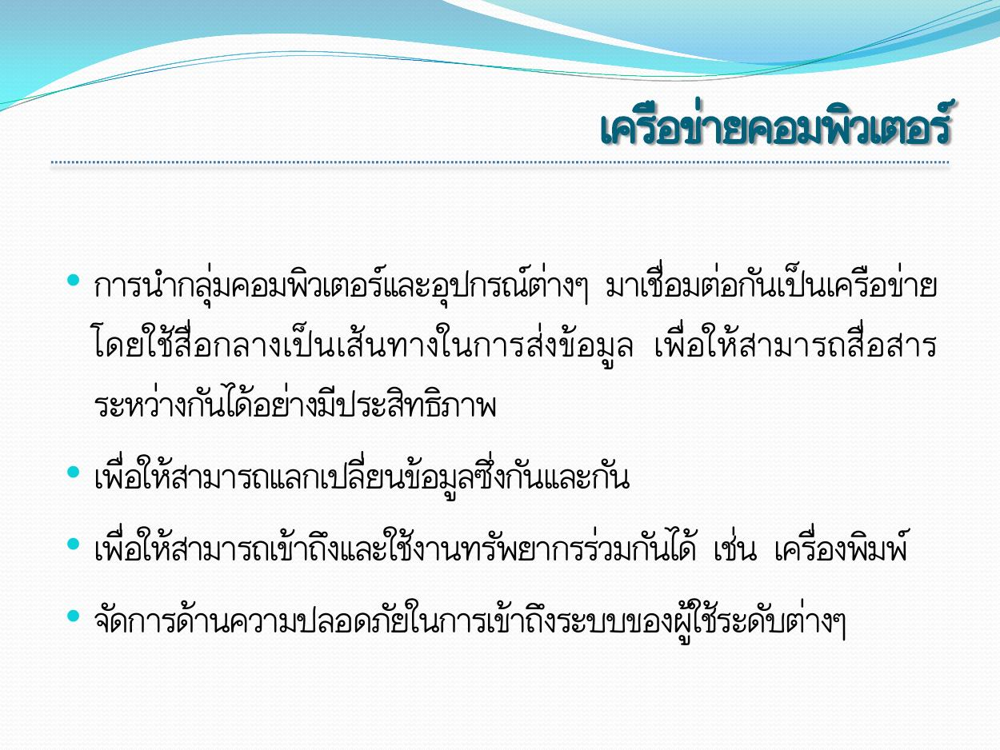
คลิกภาพเพื่อเปิดขยาย
อ่านข้อความต้นฉบับที่สกัดได้ (ไทย/อังกฤษตามไฟล์)
เครือข่ายคอมพิวเตอร์
• การนากลุ่มคอมพิวเตอร์และอุปกรณ์ต่างๆ มาเชื่อมต่อกันเป็นเครือข่าย
โดยใช้สื่ อ กลางเป็ น เส้ น ทางในการส่ ง ข้ อมู ล เพื่อให้ ส ามารถสื่ อ สาร
ระหว่างกันได้อย่างมีประสิทธิภาพ
• เพื่อให้สามารถแลกเปลี่ยนข้อมูลซึ่งกันและกัน
• เพื่อให้สามารถเข้าถึงและใช้งานทรัพยากรร่วมกันได้ เช่น เครื่องพิมพ์
• จัดการด้านความปลอดภัยในการเข้าถึงระบบของผู้ใช้ระดับต่างๆ
ทบทวนภาษาไทย: บทนำการสื่อสารข้อมูลและเครือข่าย
กลับสารบัญ ↑หน้า 6 — แนวคิดในการสร้างเครือข่ายคอมพิวเตอร์
ดูภาพต้นฉบับหน้า 6
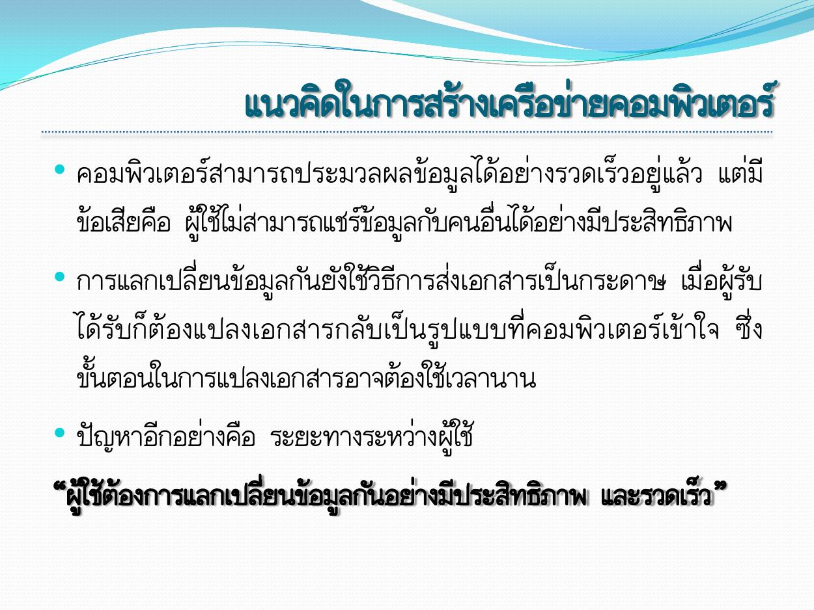
คลิกภาพเพื่อเปิดขยาย
อ่านข้อความต้นฉบับที่สกัดได้ (ไทย/อังกฤษตามไฟล์)
แนวคิดในการสร้างเครือข่ายคอมพิวเตอร์
• คอมพิวเตอร์ สามารถประมวลผลข้อมูลได้อย่างรวดเร็วอยู่แล้ว แต่มี
ข้อเสียคือ ผู้ใช้ไม่สามารถแชร์ข้อมูลกับคนอื่นได้อย่างมีประสิทธิภาพ
• การแลกเปลี่ยนข้อมูลกันยังใช้วิธีการส่งเอกสารเป็นกระดาษ เมื่อผู้รับ
ได้รั บก็ ต้ อ งแปลงเอกสารกลั บ เป็ น รู ป แบบที่ ค อมพิ ว เตอร์ เ ข้ า ใจ ซึ่ ง
ขั้นตอนในการแปลงเอกสารอาจต้องใช้เวลานาน
• ปัญหาอีกอย่างคือ ระยะทางระหว่างผู้ใช้
“ผู้ใช้ต้องการแลกเปลี่ยนข้อมูลกันอย่างมีประสิทธิภาพ และรวดเร็ว ”
ทบทวนภาษาไทย: บทนำการสื่อสารข้อมูลและเครือข่าย
กลับสารบัญ ↑หน้า 7 — ประโยชน์ของเครือข่าย
ดูภาพต้นฉบับหน้า 7
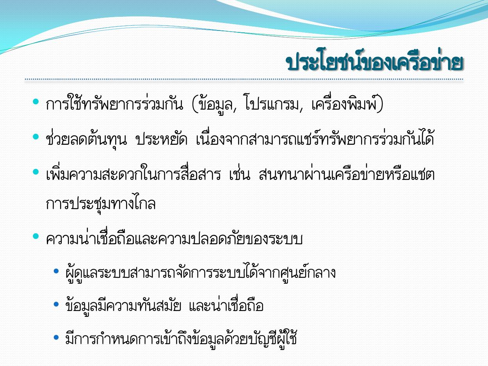
คลิกภาพเพื่อเปิดขยาย
อ่านข้อความต้นฉบับที่สกัดได้ (ไทย/อังกฤษตามไฟล์)
ประโยชน์ของเครือข่าย
• การใช้ทรัพยากรร่วมกัน (ข้อมูล, โปรแกรม, เครื่องพิมพ์)
• ช่วยลดต้นทุน ประหยัด เนื่องจากสามารถแชร์ทรัพยากรร่วมกันได้
• เพิ่มความสะดวกในการสื่อสาร เช่น สนทนาผ่านเครือข่ายหรือแชต
การประชุมทางไกล
• ความน่าเชื่อถือและความปลอดภัยของระบบ
• ผู้ดูแลระบบสามารถจัดการระบบได้จากศูนย์กลาง
• ข้อมูลมีความทันสมัย และน่าเชื่อถือ
• มีการกาหนดการเข้าถึงข้อมูลด้วยบัญชีผู้ใช้
ทบทวนภาษาไทย: บทนำการสื่อสารข้อมูลและเครือข่าย
กลับสารบัญ ↑หน้า 8 — การแลกเปลีย่ นข้อมูลอย่างมีประสิทธิภาพ
ดูภาพต้นฉบับหน้า 8
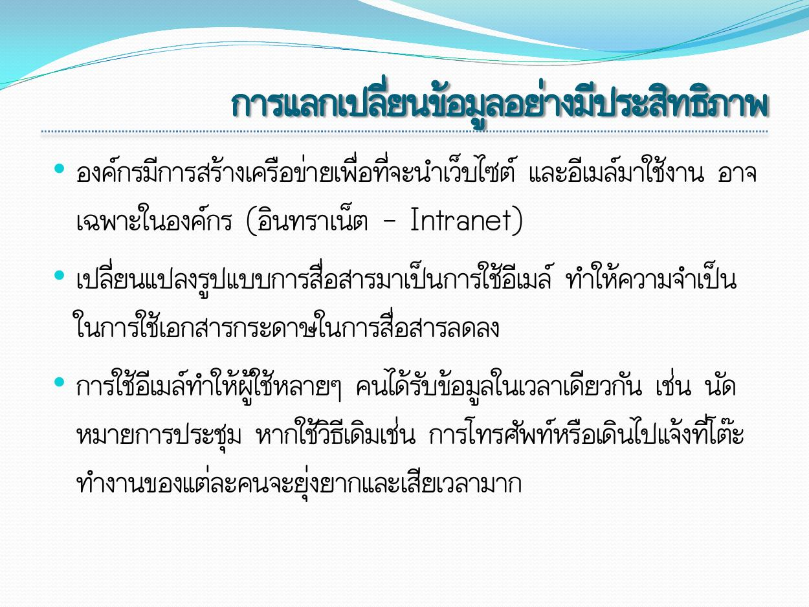
คลิกภาพเพื่อเปิดขยาย
อ่านข้อความต้นฉบับที่สกัดได้ (ไทย/อังกฤษตามไฟล์)
การแลกเปลีย่ นข้อมูลอย่างมีประสิทธิภาพ
• องค์กรมีการสร้างเครือข่ายเพื่อที่จะนาเว็บไซต์ และอีเมล์มาใช้งาน อาจ
เฉพาะในองค์กร (อินทราเน็ต - Intranet)
• เปลี่ยนแปลงรูปแบบการสื่อสารมาเป็นการใช้อีเมล์ ทาให้ความจาเป็น
ในการใช้เอกสารกระดาษในการสื่อสารลดลง
• การใช้อีเมล์ทาให้ผู้ใช้หลายๆ คนได้รับข้อมูลในเวลาเดียวกัน เช่น นัด
หมายการประชุม หากใช้วิธีเดิมเช่น การโทรศัพท์หรือเดินไปแจ้งที่โต๊ะ
ทางานของแต่ละคนจะยุ่งยากและเสียเวลามาก
ทบทวนภาษาไทย: บทนำการสื่อสารข้อมูลและเครือข่าย
กลับสารบัญ ↑หน้า 9 — การแชร์ฮาร์ดแวร์และซอฟต์แวร์
ดูภาพต้นฉบับหน้า 9
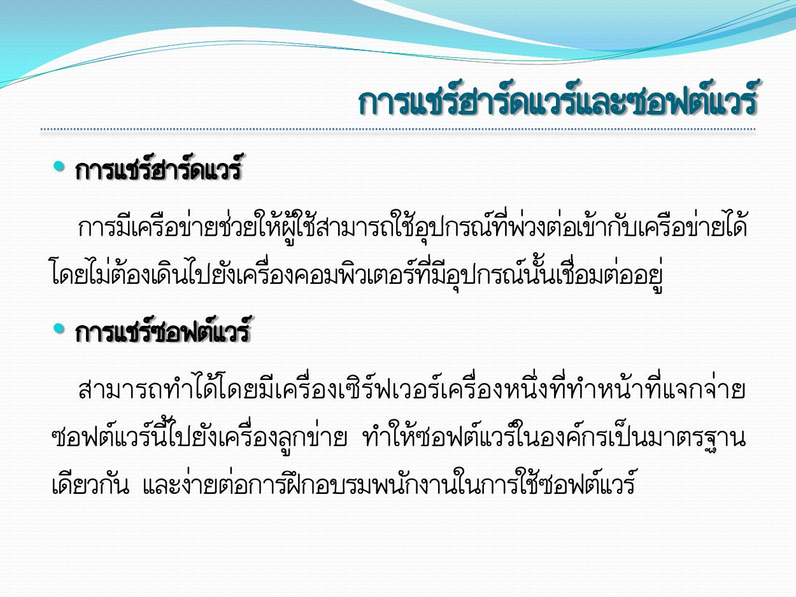
คลิกภาพเพื่อเปิดขยาย
อ่านข้อความต้นฉบับที่สกัดได้ (ไทย/อังกฤษตามไฟล์)
การแชร์ฮาร์ดแวร์และซอฟต์แวร์
• การแชร์ฮาร์ดแวร์
การมีเครือข่ายช่วยให้ผู้ใช้สามารถใช้อุปกรณ์ที่พ่วงต่อเข้ากับเครือข่ายได้
โดยไม่ต้องเดินไปยังเครื่องคอมพิวเตอร์ที่มีอุปกรณ์นั้นเชื่อมต่ออยู่
• การแชร์ซอฟต์แวร์
สามารถทาได้โ ดยมี เครื่ องเซิร์ฟเวอร์ เครื่องหนึ่ งที่ทาหน้า ที่แจกจ่า ย
ซอฟต์แวร์นี้ไปยังเครื่องลูกข่าย ทาให้ซอฟต์แวร์ในองค์กรเป็นมาตรฐาน
เดียวกัน และง่ายต่อการฝึกอบรมพนักงานในการใช้ซอฟต์แวร์
ทบทวนภาษาไทย: บทนำการสื่อสารข้อมูลและเครือข่าย
กลับสารบัญ ↑หน้า 10 — การประหยัด
ดูภาพต้นฉบับหน้า 10
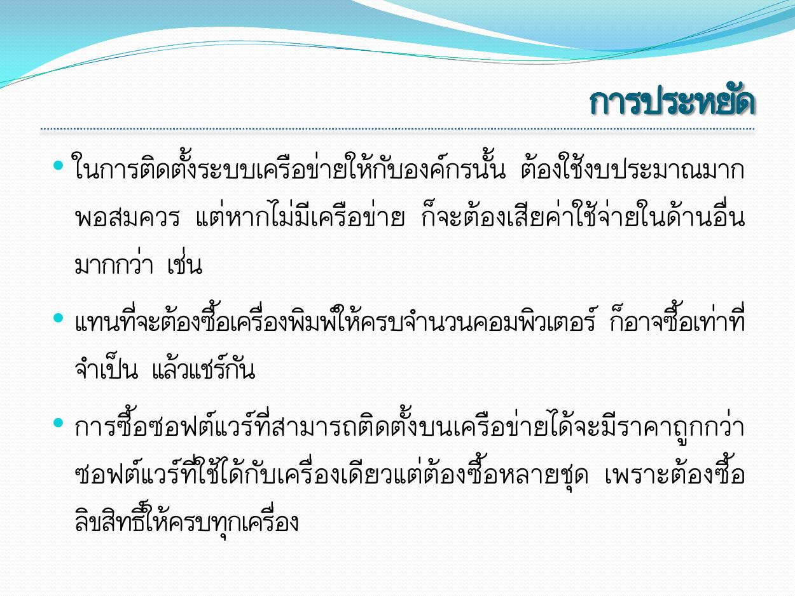
คลิกภาพเพื่อเปิดขยาย
อ่านข้อความต้นฉบับที่สกัดได้ (ไทย/อังกฤษตามไฟล์)
การประหยัด
• ในการติดตั้งระบบเครือข่ายให้กับองค์กรนั้น ต้องใช้งบประมาณมาก
พอสมควร แต่ห ากไม่ มี เครือข่า ย ก็ จะต้องเสี ยค่ าใช้จ่ า ยในด้ านอื่ น
มากกว่า เช่น
• แทนที่จะต้องซื้อเครื่องพิมพ์ให้ครบจานวนคอมพิวเตอร์ ก็อาจซื้อเท่าที่
จาเป็น แล้วแชร์กัน
• การซื้ อ ซอฟต์ แ วร์ ที่ส ามารถติ ด ตั้ ง บนเครื อ ข่ า ยได้ จ ะมี ร าคาถู ก กว่ า
ซอฟต์ แ วร์ ที่ใ ช้ไ ด้ กั บเครื่ องเดีย วแต่ต้องซื้อหลายชุ ด เพราะต้ อ งซื้ อ
ลิขสิทธิ์ให้ครบทุกเครื่อง
ทบทวนภาษาไทย: บทนำการสื่อสารข้อมูลและเครือข่าย
กลับสารบัญ ↑หน้า 11 — เกณฑ์วัดประสิทธิภาพของเครือข่าย
ดูภาพต้นฉบับหน้า 11
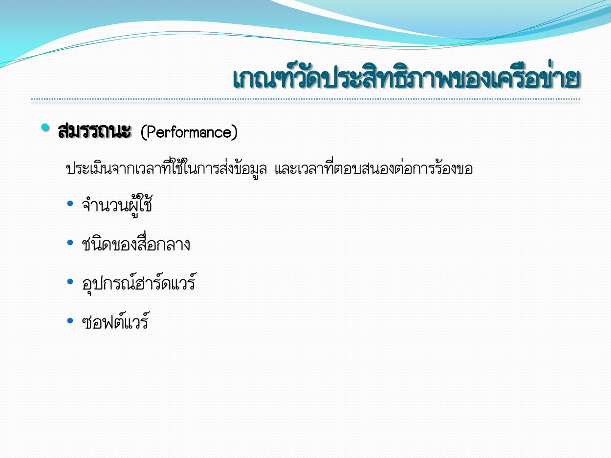
คลิกภาพเพื่อเปิดขยาย
อ่านข้อความต้นฉบับที่สกัดได้ (ไทย/อังกฤษตามไฟล์)
เกณฑ์วัดประสิทธิภาพของเครือข่าย
• สมรรถนะ (Performance)
ประเมินจากเวลาที่ใช้ในการส่งข้อมูล และเวลาที่ตอบสนองต่อการร้องขอ
• จานวนผู้ใช้
• ชนิดของสื่อกลาง
• อุปกรณ์ฮาร์ดแวร์
• ซอฟต์แวร์
ทบทวนภาษาไทย: บทนำการสื่อสารข้อมูลและเครือข่าย
กลับสารบัญ ↑หน้า 12 — เกณฑ์วัดประสิทธิภาพของเครือข่าย
ดูภาพต้นฉบับหน้า 12
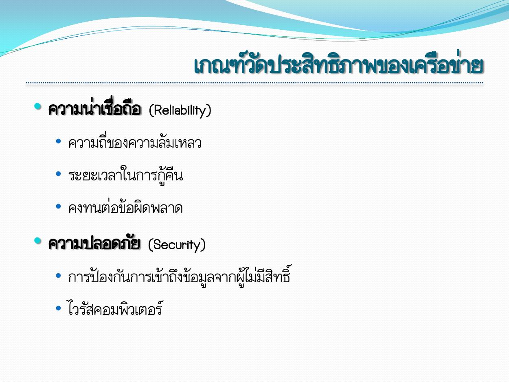
คลิกภาพเพื่อเปิดขยาย
อ่านข้อความต้นฉบับที่สกัดได้ (ไทย/อังกฤษตามไฟล์)
เกณฑ์วัดประสิทธิภาพของเครือข่าย
• ความน่าเชื่อถือ (Reliability)
• ความถี่ของความล้มเหลว
• ระยะเวลาในการกู้คืน
• คงทนต่อข้อผิดพลาด
• ความปลอดภัย (Security)
• การป้องกันการเข้าถึงข้อมูลจากผู้ไม่มีสิทธิ์
• ไวรัสคอมพิวเตอร์
ทบทวนภาษาไทย: บทนำการสื่อสารข้อมูลและเครือข่าย
กลับสารบัญ ↑